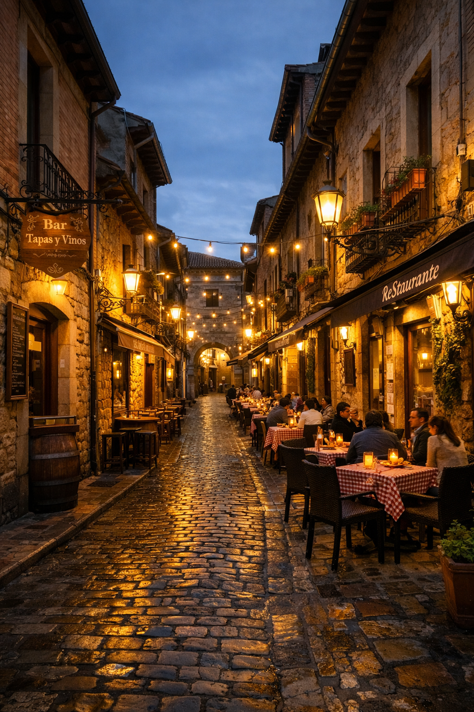

Bar Entrecalles (Calle Cervantes 7, Barrio Romántico – León)
Descripción y carta
Entrecalles combina tradición y modernidad con una atmósfera relajada. Sus tapas caseras incluyen empanadillas de cecina y queso, couscous vegetal, morcilla con compota de manzana, brochetas de pollo y calabacín, patatas gajo con cheddar y cecina, croquetas de cecina y ventresca de bonito con pimientos caramelizados. Los clientes elogian especialmente las patatas gajo y la atención del personal.
Ambiente y servicio
El bar pretende que los clientes se sientan como en casa; el servicio es cercano y hay buena selección de vermut. Su terraza interior crea un ambiente acogedor para tomar tapas y vinos.
Información práctica
- Dirección: Calle Cervantes 7, Barrio Romántico, 24003 León.
- Horario: jueves y viernes de 20:00 a 00:30; sábados de 13:00 a 16:30 y de 20:00 a 00:30; domingos de 13:00 a 16:30 y de 20:00 a 00:00.
- Teléfono: +34 615 02 82 72.
- Especialidades: patatas gajo con cheddar y cecina, croquetas de cecina, couscous, brochetas.
- Precio: económico; tapas generosas con la consumición.
- Consejo: ideal para vermut y tapeo distendido; probar sus patatas gajo.